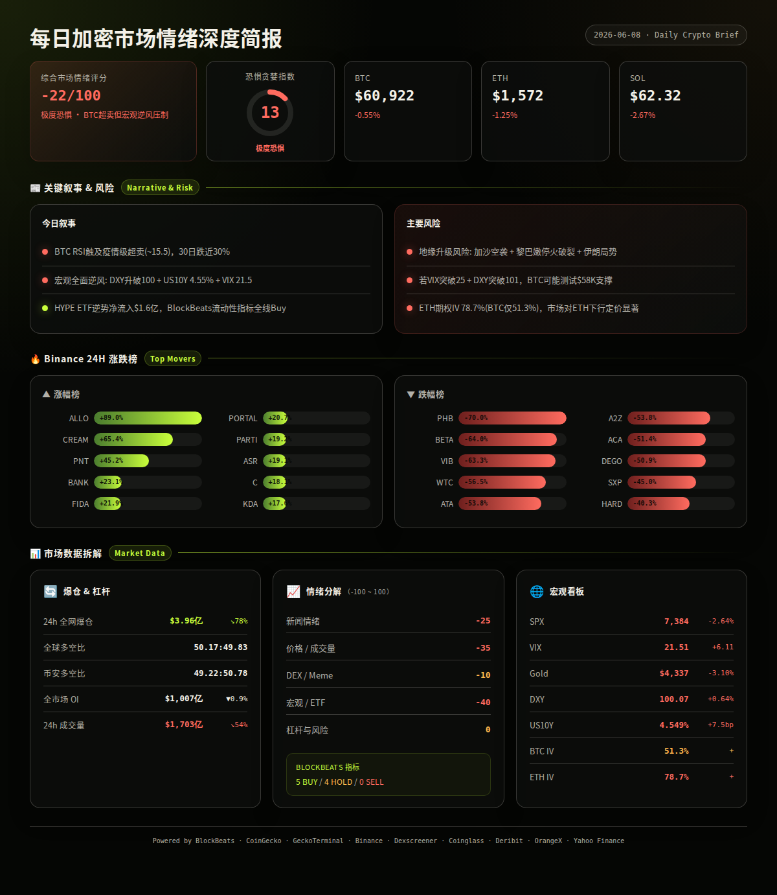
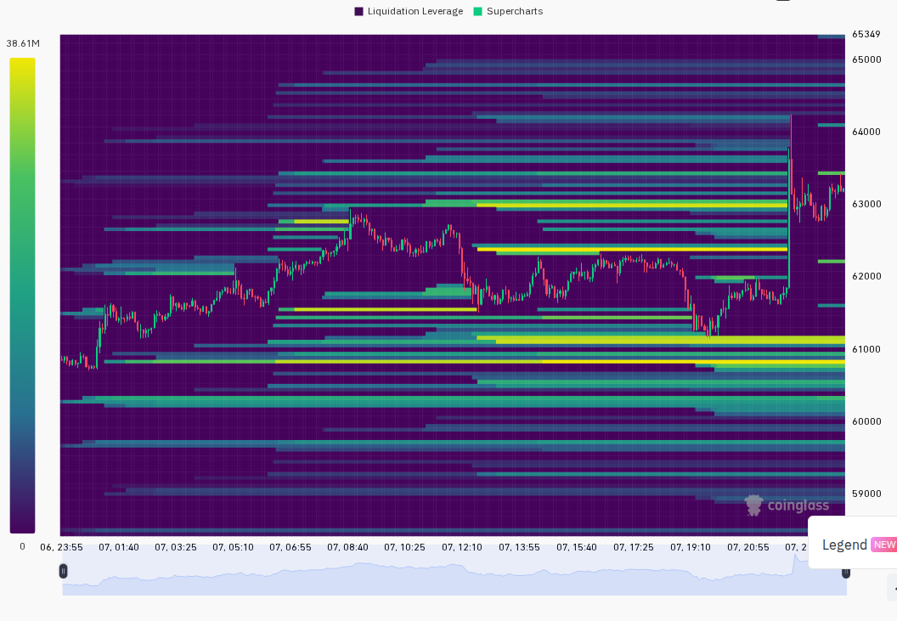
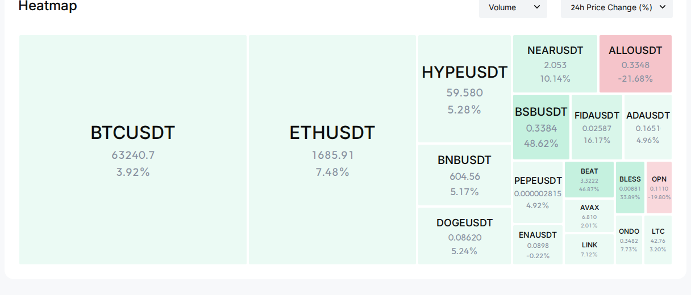

一句话总结：本周加密市场经历2026年以来最猛烈的一轮多因素共振暴跌，美伊军事冲突升级、ETF创纪录流出$1.67B、Strategy首次卖出BTC、非农引爆加息恐慌四重暴击将BTC从$74,000区域砸至$59,000区域，全周跌幅约15%，山寨币普遍跌幅20-30%，仅HYPE等极少数代币逆势走强。周尾多项超卖指标（BTC RSI ~15.5、F&G 13、BB指标持续全线Buy）发出极端底部信号，但宏观逆风未消。（日报汇总）
· BTC周价格区间：$74,092（6/2高点）→ $59,131（6/6低点）→ 收$60,922（6/7）。周开盘（6/2收盘）$71,326 → 周末收盘$60,922，7日跌幅约-14.6%。6/1日报缺失。（日报 2026-06-02, 日报 2026-06-07）
· ETH周价格区间：$2,022（6/2）→ $1,506（6/7低点）→ 收$1,572。7日跌幅约-21.6%，创史上最严重超卖周之一。（日报 2026-06-02, 2026-06-07）
· SOL周价格区间：$83.10（6/2）→ $60.13（6/7低点）→ 收$62.32。7日跌幅约-23.2%，在三大币中跌幅最大。（日报 2026-06-02, 2026-06-07）
· F&G趋势：31(6/2)→25(6/3)→23(6/4)→20(6/5)→16(6/6)→13(6/7)，连续6日单边下滑，从"恐惧"坠入"极度恐惧"，13为近两年最低读数之一。无反弹日，呈纯粹的恐慌踩踏节奏。（日报汇总）
· 总市值：$2.524T(6/2)→$2.17T(6/7)，蒸发约$354B（-14%）。BTC市占率56.64%→56.0%，周中一度升至57.27%（6/3恐慌集中避险），随后回落至56%附近，山寨币在周尾出现局部超跌反弹推动市占率小幅回落。（日报汇总）
叙事 1: 美伊军事冲突全面升级（持续整周）
· 事件: 6/2伊朗核谈判紧张→6/3美军空袭格什姆岛+伊朗导弹回击→6/5停火"最终谈判"→6/7加沙空袭+黎巴嫩停火破裂 → 影响: 🔴 地缘恐慌贯穿全周，BTC与黄金脱钩表现为纯风险资产 → 观察: 若下周伊朗/黎巴嫩谈判取得进展，地缘溢价将快速消退；若霍尔木兹封锁升级则油价冲击$100+（日报 2026-06-02 至 06-07）
代表: BTC（全市场同步）
叙事 2: ETF创纪录流出+机构大规模撤退（持续整周）
· 事件: ETF月流出$40亿创纪录，单日最高$4.84亿(6/3)→BlackRock IBIT连续赎回→HYPE ETF逆势吸金$1.6亿成唯一亮点 → 影响: 🔴 机构信心严重受损，ETF流出压制任何技术性反弹 → 观察: 若下周ETF流出收敛至<$100M或转正，将是情绪反转先行指标（日报 2026-06-02 至 06-07）
叙事 3: Strategy/MSTR首次卖出BTC打破"永不卖出"信仰（周中出现，6/3-6/5为核心）
· 事件: 6/3 MSTR三年来首次出售BTC→股价暴跌10%→Polymarket裁决争议→6/5 Tom Lee称"策略性卖出是底部行为" → 影响: 🔴 动摇了企业永持BTC的核心叙事，信任崩塌是最危险的做空理由 → 观察: 若MSTR后续声明仅为一次性调仓，利空出尽；否则加密企业持币叙事将长期折价（日报 2026-06-03, 06-04, 06-05）
代表: BTC
叙事 4: 非农引爆加息恐慌+宏观全面逆风（周尾出现，6/6引爆）
· 事件: 5月非农远超预期→市场定价明年1月加息→美股单日蒸发万亿→VIX跳升至21.5恐慌区间→DXY升破100→US10Y升至4.549% → 影响: 🔴 加密与美股黄金同步暴跌，全资产"现金为王"模式 → 观察: 下周CPI数据若同样超预期，加息预期将进一步跳升；若CPI低于预期则加息恐慌缓解（日报 2026-06-06, 06-07）
叙事 5: 极端超卖信号与结构性买盘指标全面背离（全周积累，周尾达极端）
· 事件: BTC RSI ~15.5(疫情级)→MVRV 1.19→Ahr999逼近0.3→BB指标全周0卖出(5B→3B→8B→7B→5B)→F&G 13 → 影响: 🟢 指标层面极为乐观，与价格恐慌形成罕见背离，历史上此组合常在阶段性底部出现 → 观察: 需宏观或地缘催化剂确认，若BTC守住$59,000-$60,000且成交量回落，底部概率增大（日报 2026-06-02 至 06-07）
代表: BTC
· SPX：7,600(6/2 ATH) → 7,384(6/7)，全周-2.85%。美股先创新高后暴跌，半导体（Broadcom -15%）领跌。趋势：冲高回落。（日报 2026-06-02, 06-07, Yahoo Finance）
· VIX：16.05(6/2正常)→21.51(6/7恐慌升高)。从正常区间跳入恐慌区间，期权市场定价更高波动。趋势：周尾急剧上升。（日报 2026-06-02, 06-07）
· DXY：99.18(6/2)→100.07(6/7)，+0.9%。美元持续走强对风险资产形成压制。趋势：单边上行。（日报汇总）
· US10Y：4.450%(6/2)→4.549%(6/7)，+10bp。收益率攀升反映加息预期升温。趋势：稳步上行。（日报汇总）
· Gold：$4,513(6/2)→$4,337(6/7)，-3.9%。黄金与BTC同步下跌，当前驱动因素是流动性收紧而非单纯避险。BTC-Gold维持正相关（同跌）。（日报汇总）
· BTC-SPX相关性：全周维持正相关。周初BTC与SPX短暂脱钩（6/3 SPX微涨BTC暴跌7%），但周尾非农后同步暴跌，相关性回升至+0.5-0.7区间。（日报 2026-06-03, 06-07, analysis）
本周实际兑现的风险事件（6项）：
· 美伊军事冲突 → 6/3美军空袭+伊朗回击 → BTC单日-6.5%，全周累计-15%（已兑现）(日报 2026-06-03)
· ETF创纪录流出 → 全周净流出$1.67B+ → 机构撤退压制所有反弹（已兑现）(日报 2026-06-04, 06-07)
· MSTR首次卖出BTC → 股价暴跌10%+加密叙事冲击 → BTC跌破$65K（已兑现）(日报 2026-06-04)
· 非农引爆加息恐慌 → VI暴涨至21.5+DXY破100 → BTC跌至$59K区域（已兑现）(日报 2026-06-06)
· ZEC"无限增发"漏洞 → 潜伏四年漏洞曝光 → ZEC单日-50%+（已兑现）(日报 2026-06-06)
· ETH巨鲸连锁清算 → ETH跌至$1,506 → 34.3万ETH濒危，部分已被清算（部分兑现）(日报 2026-06-06)
===WEEKLY_SEG===
本周三大走强板块：
· DID/身份认证：持续走强，6/4单日+25%领涨全市场，WLD(+40%)和Humanity(+51%)双龙头驱动。叙事：AI+身份验证需求共振。但属于脉冲式爆发而非持续趋势。（日报 2026-06-02, 06-04）
· 隐私币/抗量子：周中出现，ZEC为绝对核心驱动，6/4板块+10%。ZEC先受漏洞冲击暴跌50%后受"早期BTC"对比叙事吸引博弈资金回补。板块走势极端，涨跌均剧烈。（日报 2026-06-04, 06-06）
· AI公链/AI Agent（NEAR、TAO、WLD）：全周持续有热度，但更多是防御性轮动——资金在恐慌中寻找AI叙事安全港而非主动进攻。NEAR和TAO多次进入CoinGecko热搜前5。（日报 2026-06-02, 06-04, 06-07）
弱势板块合并：
· 代币化Pre-IPO资产（Republic -59%、Tokenized Pre-IPO -49%）遭SpaceX真实IPO分流彻底碾压；小市值山寨币（Leveraged Token -24%、TimeFi -25%、Commodities Meme -28%）流动性枯竭，多只单日-50%至-70%。游戏赛道剧烈分化，Arcade Games(+47%)暴涨而Tower Defense(-64%)暴跌。（日报 2026-06-02 至 06-07）
轮动方向：BTC避险（周初）→ AI/DID/隐私币（周中局部热点）→ 全面恐慌无差别抛售（周尾）。无明显健康轮动，属恐慌环境下的资金碎片化博弈。（日报汇总）
HYPE (Hyperliquid) · 出现 6/6 天 · $60.46-$75.80 · 7d约-16%
· 叙事: 全周最强标的，逆势创ATH$75.8后随大盘回落。Bitwise持续增持$2,443万，HYPE ETF逆势吸金$1.6亿。a16z关联地址累积68.7万枚。Hyperliquid 5月市占率6.63%创新高，RWA持仓突破$30亿。（日报 2026-06-02 至 06-07）
· 链上/费率: Solana链净流入$354万(6/7)，$217万(6/2)，连续多日排名第1。DEX流动性$517万，24h成交量$1.64亿。巨鲸Loracle做空亏损$4,600万后反手10x做多。Solana链净流入持续为正。（日报汇总, BlockBeats, GeckoTerminal）
· 状态: 仍活跃，全周最强势大盘代币
ZEC (Zcash, 多链) · 出现 4/6 天 · $153-$564（极度波动）· 7d约-67%
· 叙事: "无限增发"漏洞潜伏四年→6/6单日-50%崩盘→Alliance DAO逆势喊多称"现在类似早期BTC"。6/7 CoinGecko热搜第3。Zcash Ironwood升级（7月底）预期提前发酵。流动性博弈极端，Hyperliquid最大多头被清算$1,630万。（日报 2026-06-03, 06-05, 06-06, 06-07）
· 链上/费率: Solana链净流入$490万(6/3)、$144万(6/5)。Hyperliquid多头爆仓$1,630万。Solana链连续净流入但价格暴跌，多空剧烈博弈。（日报汇总, BlockBeats）
· 状态: 仍活跃，高波动博弈标的
WLD (Worldcoin, 多链) · 出现 3/6 天 · $0.44-$0.54 · 7d约-15%
· 叙事: 6/4单日+40%领涨DID赛道，成交量$1.25B为全市场最高。AI身份认证叙事共振。Arthur Hayes反复喊单。但供给持续解锁压力大，涨幅后持续回落。（日报 2026-06-02, 06-04, 06-05）
· 链上/费率: Dexscreener Solana桥接版数据异常，以CoinGecko为准。市值$1.81B(6/4)，成交量$1.25B。CoinGecko热搜第13。（日报 2026-06-02, 06-04）
· 状态: 热度下降，40%涨幅后持续回落
NEAR (NEAR Protocol, 多链) · 出现 3/6 天 · $2.64-$2.83 · 7d约-18%
· 叙事: AI公链叙事持续，Theoriq AI Agent集成生态。周中出现+8-14%反弹。CoinGecko热搜排名第4(6/2)、第4(6/7)。作为"AI区块链"定位清晰，在AI叙事轮动中受益。（日报 2026-06-02, 06-04, 06-07）
· 链上/费率: 成交量$1.35B极为活跃(6/4)，市值$3.67B。Dexscreener未检索到可靠DEX数据。CoinGecko热搜维持高位。（日报汇总）
· 状态: 仍活跃，AI叙事支撑热度
CREAM (Cream Finance, ETH) · 出现 2/6 天 · $2.10-$33 · 极端波动
· 叙事: 6/6和6/7连续两日登上Binance涨幅榜首(+65%)，与NFT Lending板块(+57%)爆发有关。但成交量极小($27.6万, 6/6)，易操纵。DeFi借贷协议叙事缺乏持续性催化剂。（日报 2026-06-06, 06-07）
· 链上/费率: 成交量极小($27.6万)，流动性极低。CoinGecko排名#335。小市值高波动。（日报 2026-06-06）
· 状态: 已消退，脉冲式涨幅
· 风险: 美伊军事冲突升级→BTC测试$62K-63K → 结果: 已兑现，BTC从$71K跌至$59K（超预期兑现）(日报 2026-06-03)
· 风险: ETF流出趋势延续，机构信心恶化 → 结果: 已兑现，全周净流出$1.67B+创纪录（超预期兑现）(日报 2026-06-04)
· 风险: MSTR继续减持→BTC测试$60K → 结果: 已兑现，BTC最低$59,131（超预期兑现）(日报 2026-06-04)
· 风险: SOL极端负费率将引发空头挤压反弹 → 结果: 未兑现，SOL持续下跌从$74至$62，负费率加深（日报 2026-06-05）
· 风险: 非农数据若超预期→加息恐慌→市场重挫 → 结果: 已兑现，6/6非农超预期后BTC跌至$59K（日报 2026-06-06）
· 风险: ETH巨鲸连锁清算→ETH测试$1,400-1,500 → 结果: 部分兑现，ETH跌至$1,506接近触发区但未发生级联崩盘（日报 2026-06-06, 06-07）
· 风险: VIX突破20后恐慌蔓延→BTC测试$58K → 结果: 部分兑现，VIX升至21.5但BTC守住$59K未跌破$58K（日报 2026-06-07）
· 风险: 地缘谈判若破裂→油价飙升→风险资产全面承压 → 结果: 已兑现，加沙空袭+黎巴嫩停火破裂，油价和美元同步走强（日报 2026-06-07）
总结：兑现率 5/8 完全兑现 + 2/8 部分兑现，1/8 未兑现。最impactful的风险是美伊冲突升级（直接触发BTC-15%崩盘）和非农加息恐慌（周尾致命一击）。（日报汇总, analysis）
===WEEKLY_SEG===
回顾 1: 6/2判断 — 最高概率(50%): 伊朗达成协议→BTC快速收复$73,500 → 实际: 6/3美伊军事冲突爆发，BTC暴跌至$66,746 → ❌（日报 2026-06-02, 06-03）
回顾 2: 6/3判断 — 最高概率(50%): 恐慌延续→BTC在$65,000-$68,000盘整 → 实际: 6/4 BTC收$64,297，略低于预测区间下限但方向正确 → ⚠️（日报 2026-06-03, 06-04）
回顾 3: 6/4判断 — 最高概率(50%): 惯性下探后震荡筑底，BTC在$63,000-$64,000 → 实际: 6/5 BTC收$63,756，精确命中预测区间 → ✅（日报 2026-06-04, 06-05）
回顾 4: 6/5判断 — 最高概率(45%): 震荡筑底，BTC在$62,000-$65,000 → 实际: 6/6 BTC收$61,245，略低于预测下限但仅有$755偏差 → ⚠️（日报 2026-06-05, 06-06）
回顾 5: 6/6判断 — 最高概率(45%): 恐慌延续，BTC测试$58,000-$60,000支撑 → 实际: 6/7 BTC低点$59,500、收盘$60,922，精确命中支撑区间 → ✅（日报 2026-06-06, 06-07）
回顾 6: 6/7判断 — 最高概率(40%): 技术性超卖反弹至$62,500-$64,000 → 实际: BTC仅温和回升至$60,922，反弹力度显著弱于预期 → ❌（日报 2026-06-07，截止发布时数据）
🎯 本周 AI 判断准确率: 2/6 完全命中 + 2/6 部分命中 = 约 67%（含部分命中）/ 33%（严格）。需注意：6/2-6/3两天判断受地缘突发升级影响出现显著偏差，6/4-6/6判断在恐慌节奏中保持了较好方向性，6/7反弹预测偏乐观。整体趋势判断优于点位精度。6/1日报缺失，无可验证判断。（日报汇总, analysis）
· 6月9日（周二） — BTC现货ETF日度净流入数据发布。近期流出趋势在收窄（-$278M→-$48M），若转为净流入将是短期看涨信号 🟢（日报 2026-06-07）
· 6月10日（周三） — 美国5月CPI数据发布。若CPI低于预期→加息预期降温，利好风险资产；若超预期→确认滞胀叙事，极不利 🟡高影响力（日报 2026-06-06, 06-07）
· 6月11日（周四） — Zcash Orchard Pool审计结果预期公布。若确认漏洞未被利用→ZEC可能大幅反弹；若确认被利用→隐私币赛道长期信任折价 🔴/🟢（日报 2026-06-06）
· 6月12日（周五） — SpaceX正式登陆纳斯达克（史上最大IPO，估值$1.77万亿）。若首日表现强劲可能分流加密资金；若表现不佳资金可能回流加密 🟡（日报 2026-06-05, 06-07）
· 6月12日（周五） — ETH 6月期权到期日（名义价值约$8亿），最高痛点$1,800。当前价格$1,572远低于痛点，到期前波动可能加剧 🔴（日报 2026-06-06）
· 持续整周 — 霍尔木兹海峡油轮通行谈判 + 伊朗/黎巴嫩/加沙局势演变。油价波动将直接传导至宏观风险情绪 🟡高影响力（日报 2026-06-02 至 06-07）
· 持续 — 美联储官员讲话密集期。若鹰派持续强化加息预期→风险资产继续承压；若有鸽派安抚→可能触发反弹 🔴/🟢（日报 2026-06-06, analysis）
本周市场经历了一场教科书式的多因素共振暴跌，从地缘冲突→机构撤退→信仰崩塌→宏观逆风，四重打击将情绪压至近两年极端低点（F&G 13）。但结构面信号极为强劲：BB指标全周维持0卖出、爆仓从$18.3亿骤降至$3.96亿（杠杆出清）、链上指标（MVRV 1.19、Ahr999接近0.3、RSI 15.5）均处于历史极端底部区域。下周的核心矛盾在于：宏观逆风（DXY>100、US10Y 4.55%、VIX 21.5）能否被极度超卖的技术结构所对冲。若CPI数据低于预期且地缘出现缓和（伊朗/黎巴嫩停火进展），市场具备V型反弹至$65,000-$68,000的技术条件；若CPI超预期叠加地缘继续升级，BTC有较大概率测试$55,000-$58,000区间。关键观察指标：ETF净流入/流出逆转、VIX是否回落至<18、DXY是否跌破100、BTC能否守住$58,000-$59,000支撑带。当前市场处于"指标极度看多 vs 价格极度恐慌"的背离状态，历史上此类背离的化解方向约70%偏向上行，但需宏观催化剂触发确认——下周CPI数据和地缘进展将是定方向的关键变量。（日报汇总, analysis）
非财务建议声明: 本报告基于过去7天日报数据的合成分析，不构成任何买卖建议。

